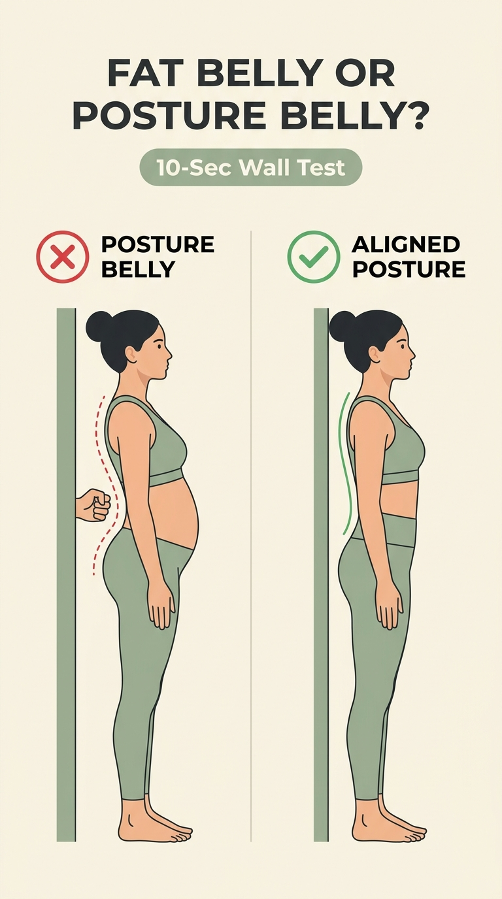
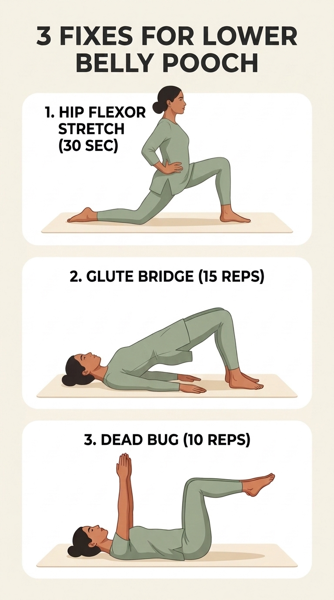

Bina Bole Viral Videos Banane ka Complete Planner
Silent videos mein Camera Angle + Visual Action + On-Screen Text hi sab kuch hota hai — sab ek jagah ready hai.
Visual Shot Guides (No Talking)
8 guidesReady-to-Use Pictures & Thumbnails
In images ko directly download karke apne Shorts, Long Videos aur Community Tab mein use karein.
Fat Belly vs Posture Belly (Wall Test)


3 Fixes for Lower Belly Pooch


10 Min Posture Fix (No Talking)

Long video ke liye high-contrast thumbnail — mobile screen par bhi clear padhne mein aata hai.
Silent Video Hook & Text Builder
Bina bole pehle 3 second mein viewer ko rokne ke liye Visual Action + On-Screen Text ideas.
• Pehle 2 sec mein ❌ Galat vs ✅ Sahi dikhane se views double hote hain.
• Screen text ko top-center mein rakhein taaki YouTube UI title se na dhake.
• Har exercise ke upar Timer / Reps badge (`30 Sec`, `15 Reps`) zaroor lagayein.
5 No-Talking Visual Hooks + Screen Texts
Click copy on any cardWeekly Balanced Upload Blueprint (Silent + Music Format)
Ek Sunday ko 1 ghante mein poore hafte ke 5 silent Shorts shoot ho sakte hain — bas music & text overlay daalna hoga!